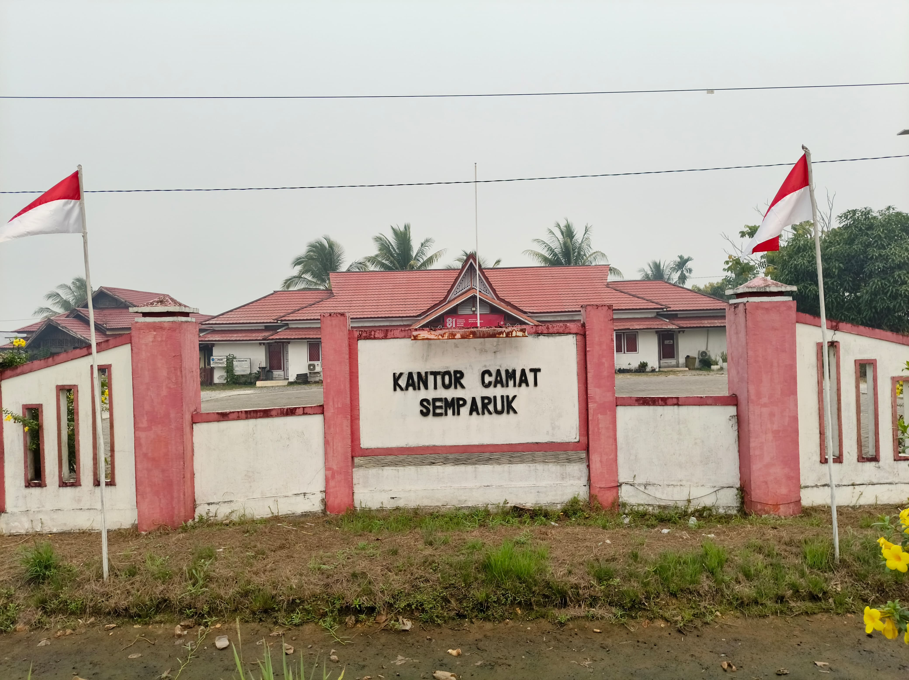
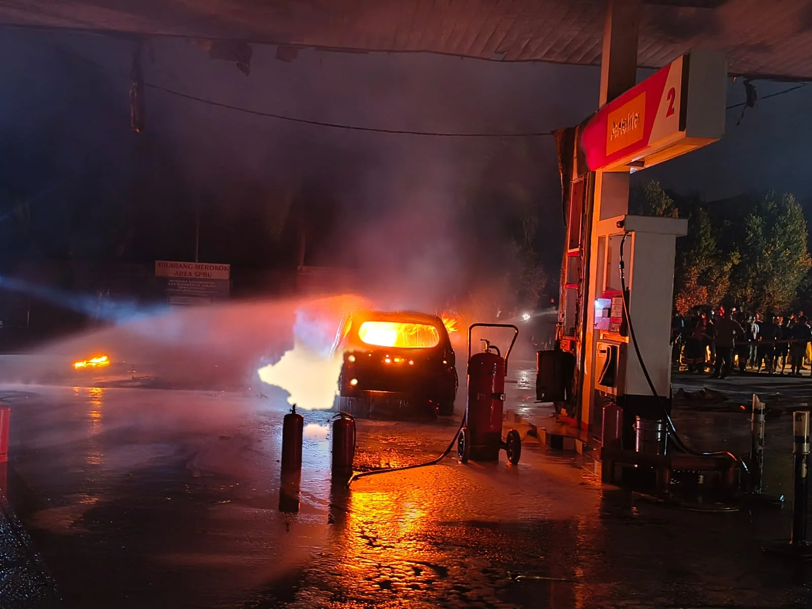

Pemerintah Desa Semparuk
Bersama Membangun Desa Semparuk
Selamat datang di website Desa Semparuk. Temukan informasi pemerintahan, kegiatan masyarakat, berita desa, potensi, serta berbagai informasi pelayanan Desa Semparuk.
Data Desa
Sekilas Data Semparuk
Informasi singkat mengenai kondisi dan data Desa Semparuk.
30.101 hingga 30.267 jiwa
Jumlah Penduduk
2.430
Kepala Keluarga
4 dusun
Dusun
42 RT / 14 RW
RT / RW
Sambutan
Selamat Datang di Desa Semparuk
Website Desa Semparuk hadir sebagai media informasi dan komunikasi antara pemerintah desa dengan masyarakat.
Melalui website ini, masyarakat dapat memperoleh informasi mengenai pemerintahan desa, kegiatan, berita, potensi desa, serta berbagai informasi pelayanan secara lebih mudah.

Informasi Terbaru
Berita & Kegiatan Desa
Informasi terbaru mengenai kegiatan pemerintahan dan masyarakat Desa Semparuk.

kebakaran
kebakaran yang terjadi di spbu menyebabkan satu mobil hangus terbakar dan di tutup nya sementara spbu
Baca selengkapnya →
Kegiatan Masyarakat
Berbagai kegiatan masyarakat yang berlangsung di lingkungan Desa Semparuk.
Baca selengkapnya →
Agenda Desa
Kegiatan Mendatang
Jadwal kegiatan dan agenda yang akan dilaksanakan di Desa Semparuk.
—
panen program
Pelaksanaan panen program Pertanian Modern (Advanced Agriculture System) oleh Kelompok Tani Dare Nandung di Desa Semparuk pada 18 Agustus 2026 dengan hasil ubinan mencapai sekitar 8,15 ton per hektare.
Potensi Desa
Potensi Desa Semparuk
Berbagai potensi yang dimiliki Desa Semparuk dan dapat dikembangkan bersama.


Dokumentasi
Galeri Desa
Dokumentasi kegiatan dan kehidupan masyarakat Desa Semparuk.

Fasilitas Kesehatan

Pusat desa

tempat ibadah
Potensi Desa
Fasilitas Desa

Pemerintahan Desa
Hubungi Kami
Punya Pertanyaan atau Aspirasi?
Sampaikan pertanyaan, masukan, atau aspirasi Anda kepada Pemerintah Desa Semparuk.